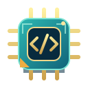

TANGRAM
EDUCATIVO · LABORATÓRIOProf. João Faustino Júnior
TANGRAM EDUCATIVO · FAMÍLIA DE DESAFIOS
🖥️ Computador Vivo
Construa. Programe. Faça funcionar.
Estude → monte → teste → explique.
HardwareAlgoritmosCondiçõesAulas do Tangram e materiais SEED-PR →Aguardando montagem
🔧 Bancada de peças
Selecione uma peça e depois toque no lugar onde deseja instalá-la. Algumas peças são distrações: investigue as funções.
🧩 Computador
💻 Tela do computador
Sem energia. Instale os componentes.
Linguagem didática simplificada: comandos LER BOTAO, SE BOTAO = PRESSIONADO, MOSTRAR OLA e FIM. Não é Python nem simulação física de uma CPU.
RAI: Uma máquina precisa de energia, processamento e memória. Qual peça fornece cada função?
Protótipo separado, para exploração pedagógica. A montagem representa dependências funcionais entre hardware e software, sem pretender reproduzir todas as conexões de um computador real.